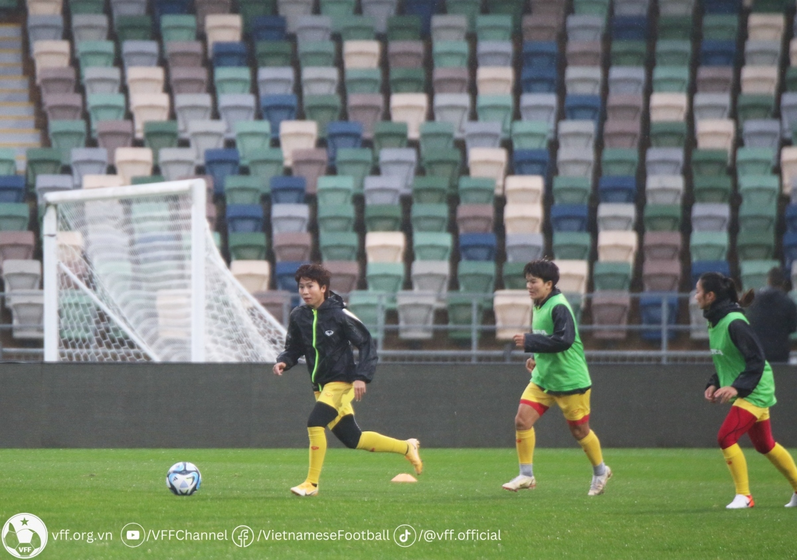

THỂ THAO
Nhận định ĐT nữ Việt Nam - ĐT nữ Mỹ: Trận đấu lịch sử
Thứ sáu, 19:00, 21/07/2023
VOV.VN - Nhận định trận đấu ĐT nữ Việt Nam và ĐT nữ Mỹ, loại trận đầu tiên bảng E - World Cup nữ 2023 diễn ra vào lúc 8h ngày 22/7 theo giờ Việt Nam
Sau rất nhiều chờ đợi, ĐT nữ Việt Nam cuối cùng cũng sẽ bước vào trận đấu mở màn ở World Cup nữ 2023 gặt ĐT nũ Mỹ. Đây sẽ là trận đấu đầu tiên trong lịch sử của bóng đá Việt Nam ở một kỳ World Cup.
